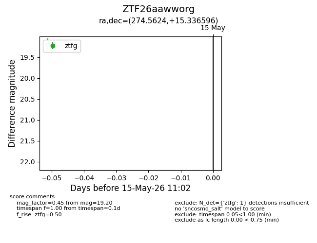
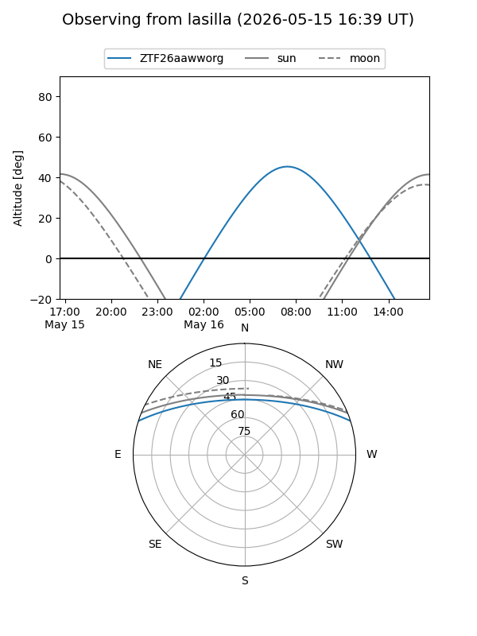
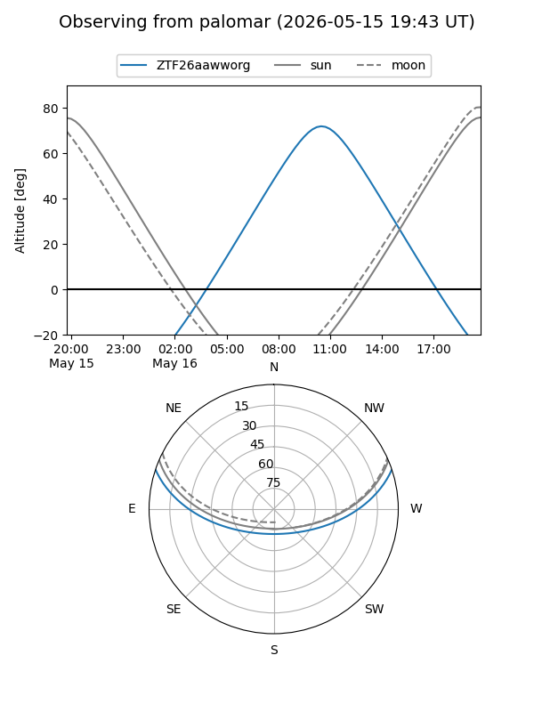

ZTF26aawworg
Target ZTF26aawworg at 2026-05-15 11:05
Aliases and brokers:
FINK: link
Lasair: link
ALeRCE: link
alt names
ZTF26aawworg (ztf,fink_ztf)
Coordinates:
equatorial (ra, dec) = 274.5624,+15.33660
equatorial (HMS+DMS) = 18:18:14.98,+15:20:11.75
galactic (l, b) = (43.1453,+14.14987)
Flags:
Photometry:
last ztfg=19.20
1 ztfg detections
Lightcurve

Visibility


Additional plots